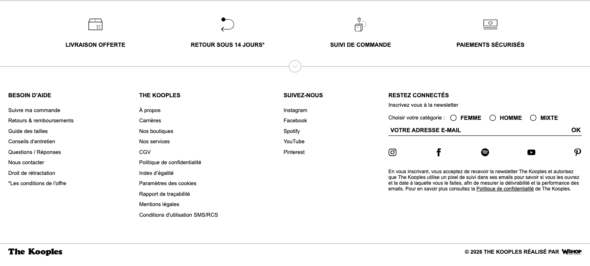

JOURNAL
JOURNAL
Petite robe noire, tailleur, robe longue drapée : six tenues chic pour le bureau, un dîner ou une soirée, avec les pièces de la collection pour les composer.
Une tenue chic repose rarement sur une pièce spectaculaire. Elle tient à une coupe nette, à une matière qui tombe bien et à deux ou trois accessoires choisis. Le noir, le marine et le marron forment une base facile à associer, que l'on réveille avec une touche de cuir, de dentelle ou de satin. Voici six looks pour passer du bureau au dîner sans tout changer.
C'est la pièce qui ne se démode pas. Une robe courte noire à la coupe simple se porte avec des escarpins à bride pour un dîner, ou avec des bottines pour un rendez-vous plus décontracté. Misez sur une longueur au-dessus du genou et des épaules structurées : la silhouette reste habillée sans paraître apprêtée. Retrouvez tous les modèles dans notre sélection de robes noires pour femme.
Le tailleur est la tenue chic la plus simple à porter au quotidien. En laine mélangée marine, il change du noir tout en restant sobre. Portez la veste et le pantalon ensemble pour une réunion importante, puis séparément le reste de la semaine : la veste sur un jean, le pantalon avec un pull fin. Des mocassins en cuir noirs complètent l'ensemble. Toute la ligne est à retrouver dans les tailleurs pour femme.


Pour un mariage du soir, un gala ou un réveillon, la robe longue drapée fait l'effet d'une tenue de cérémonie sans en avoir la rigidité. Le drapé suffit à habiller la silhouette : gardez des bijoux discrets et choisissez des sandales à talons qui allongent la jambe. D'autres coupes, en satin ou en dentelle, vous attendent parmi nos robes longues.
C'est le look chic du quotidien. Une veste de tailleur oversize en laine, portée ouverte sur un jean slim noir, donne une allure structurée à une tenue simple. L'équilibre vient des volumes : une veste ample appelle un bas ajusté et des bottines à talon. Changez de couleur ou de coupe grâce à notre sélection de vestes de tailleur pour femme.


Le mélange des matières donne du relief à une tenue chic. Un blouson en cuir marron sur une jupe midi en satin de la même couleur crée une tenue chic avec une pointe rock. Restez dans une seule couleur du haut en bas : le cuir et le satin se répondent sans que la tenue paraisse chargée. Tous les blousons et vestes sont réunis dans notre sélection cuir pour femme.


Pour l'hiver, la maille peut être aussi habillée qu'une blouse. Un pull noir à lavallière rentré dans une jupe midi en dentelle donne une tenue douce et élégante, parfaite pour un déjeuner ou une fête de fin d'année. Des escarpins à clous ajoutent la touche affirmée qui évite le look trop sage. D'autres modèles sont à découvrir parmi nos pulls et cardigans pour femme.


Le noir, le marine, le gris et le marron sont les plus faciles à associer entre eux. Une tenue chic gagne à rester dans deux couleurs au maximum, la troisième venant d'un accessoire : un sac, une ceinture ou des chaussures.
Des escarpins ou des sandales à talons pour une soirée, des mocassins ou des bottines en cuir pour la journée. Le cuir lisse et noir reste le choix le plus sûr, car il s'accorde avec toutes les pièces de ce guide.
La laine se brosse et s'aère entre deux ports, et se nettoie à sec ou à la main selon l'étiquette. Le cuir se dépoussière avec un chiffon doux et se nourrit avec un baume adapté. Le détail est dans nos conseils d'entretien.
